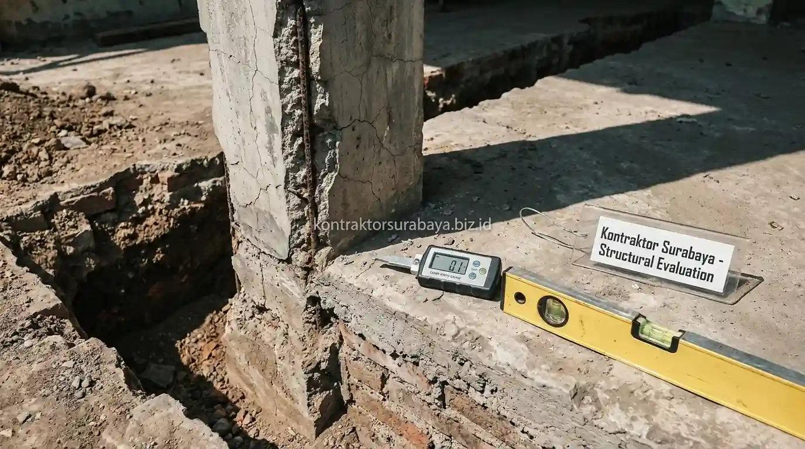

Bagi banyak pemilik hunian di kawasan mapan Surabaya, Sidoarjo, dan Gresik, memiliki rumah warisan atau bangunan lama berusia di atas 15–25 tahun kerap memicu dilema finansial: apakah lebih baik melakukan renovasi besar-besaran atau langsung membongkar habis untuk dibangun baru dari nol? Pertanyaan ini bukan sekadar urusan selera estetika, melainkan keputusan investasi properti bernilai ratusan juta rupiah.
Banyak pemilik rumah terjebak asumsi keliru bahwa merenovasi rumah lama selalu memakan biaya separuh dari bangun baru. Kenyataannya, tanpa audit integritas struktur yang cermat, proyek renovasi bisa berubah menjadi "jebakan biaya tak berujung" akibat pembongkaran tambal-sulam yang membengkak. Melalui panduan dari tim engineer jasa renovasi rumah Surabaya, kami mengupas tuntas parameter kelayakan teknis, rincian biaya tersembunyi, hingga matriks perbandingan ekonomis agar Anda tidak salah langkah.
1. Faktor Penentu Kelayakan Struktur Rumah Lama untuk Dipertahankan
Kondisi pondasi, kondisi kolom struktural, ada tidaknya retak struktural yang signifikan, dan umur bangunan adalah empat faktor utama yang menentukan apakah struktur rumah lama masih layak dipertahankan. Mengetahui batasan ini sangat vital sebelum Anda menyusun gambar denah baru:
- Kondisi Pondasi dan Penurunan Tanah: Kondisi pondasi yang masih stabil tanpa tanda penurunan menjadi indikator awal bahwa struktur dasar rumah masih layak dipertahankan. Jika terjadi penurunan lantai yang tidak merata (differential settlement) atau lantai rumah berada jauh di bawah elevasi aspal jalan raya, mempertahankan pondasi lama justru membutuhkan biaya peninggian yang kompleks.
- Integritas Kolom dan Balok Beton: Kondisi kolom struktural yang bebas dari keretakan besar menunjukkan kemampuan menahan beban masih sesuai fungsi awal. Pengecekan dimensi kolom praktis (15x15 cm) vs kolom struktur utama (20x20 cm ke atas) menentukan apakah bangunan sanggup menopang penambahan lantai 2.
- Pola Keretakan Dinding: Ada tidaknya retak struktural yang signifikan, terutama retak diagonal 45 derajat pada sudut dinding atau balok gantung, menjadi tanda peringatan penurunan pondasi atau pergeseran tanah yang memerlukan evaluasi teknis mendalam.
- Umur dan Riwayat Konstruksi Bangunan: Umur bangunan turut memengaruhi penilaian, mengingat material semen lama, penggunaan pasir lokal tanpa cuci, dan metode konstruksi manual dekade 1990-an memiliki daya tahan serta mutu beton (sering kali di bawah K-175) yang berbeda jauh dari standar SNI saat ini.
2. Kapan Renovasi Lebih Hemat Dibanding Bongkar Bangun Baru?
Renovasi umumnya lebih hemat ketika struktur utama seperti pondasi dan kolom masih dalam kondisi baik, sehingga biaya dapat difokuskan pada perbaikan arsitektur dan finishing tanpa perlu membangun ulang struktur dari nol.
Pada kondisi ini, sebagian besar anggaran dapat dialokasikan untuk peningkatan estetika, penataan ulang ruang non-struktural (seperti merobohkan sekat partisi bata ringan), peremajaan kusen aluminium dan lantai granit tile, serta perbaikan sistem sanitasi dan mekanikal elektrikal (MEP). Karena kerangka dasar beton bertulang dan atap utama masih kokoh, Anda bisa menghemat 35% hingga 50% dari total biaya konstruksi jika dibandingkan dengan opsi meratakan tanah.
Renovasi juga menjadi opsi terbaik jika Anda hanya ingin melakukan peremajaan parsial, misalnya transformasi renovasi fasad tampak depan, peninggian plafon void untuk sirkulasi udara, atau perombakan dapur dan area servis belakang.
3. Tabel Komparasi Biaya & Karakteristik: Renovasi vs Bangun Baru
Berikut tabel matriks komparasi teknis dan estimasi biaya per meter persegi untuk wilayah Surabaya dan sekitarnya:
| Kategori Pekerjaan | Estimasi Biaya / m² | Kondisi Bangunan Eksisting | Kelebihan Utama | Risiko / Kekurangan |
|---|---|---|---|---|
| Renovasi Parsial / Estetika | Rp 1.500.000 – Rp 2.800.000 | Struktur pondasi & atap masih 90% prima, cat kusam, keramik lama. | Pengerjaan cepat (1–2 bulan), biaya terjangkau, rumah tetap bisa dihuni. | Tidak bisa mengubah zonasi denah ruangan secara drastis. |
| Renovasi Total (Overhaul) | Rp 3.000.000 – Rp 4.200.000 | Pondasi kuat, namun tata ruang gelap, atap kayu lapuk, instalasi pipa rusak. | Tampilan seperti baru, denah lebih modern, mempertahankan kolom utama. | Sering muncul biaya bongkar dan perbaikan tak terduga di tengah jalan. |
| Bongkar Total & Bangun Baru | Rp 4.000.000 – Rp 5.800.000 | Pondasi amblas, mutu beton rapuh, rumah tenggelam dari jalan raya. | Bebas merancang denah dari nol, struktur SNI bergaransi, umur bangunan 30+ tahun. | Membutuhkan biaya bongkar & buang puing, durasi konstruksi 5–8 bulan. |

4. Kapan Bongkar Bangun Baru Lebih Masuk Akal Dibanding Renovasi?
Bongkar bangun baru lebih masuk akal ketika kerusakan struktural sudah meluas, denah lama sangat membatasi kebutuhan ruang saat ini, atau biaya perbaikan bertahap diperkirakan akan melebihi biaya membangun ulang secara keseluruhan.
Pada kasus seperti ini, mempertahankan struktur lama justru dapat menimbulkan biaya perbaikan berulang di masa depan tanpa jaminan hasil yang setara dengan bangunan baru. Beberapa skenario di mana membangun baru via layanan jasa kontraktor rumah Surabaya menjadi solusi paling rasional antara lain:
- Rumah Berada Jauh di Bawah Ketinggian Jalan: Di area Surabaya yang jalan lingkungannya telah ditinggikan berkali-kali oleh dinas kota, meninggikan lantai rumah lama tanpa membongkar atap akan membuat plafon menjadi sangat rendah (kurang dari 2,4 meter) dan pengap.
- Rencana Peningkatan Menjadi 2–3 Lantai: Jika pondasi awal rumah 1 lantai hanya berupa batu kali tanpa cakar ayam (footplat) bertulang, memaksakan suntik kolom pada bangunan lama sering kali memakan biaya yang hampir sama dengan membuat pondasi baru dari nol.
- Kerusakan Akibat Rayap dan Lembap Masif: Jika rangka plafon, kusen, dan kuda-kuda atap kayu sudah keropos parah akibat rayap, pembongkaran atap total secara struktural menuntut penguatan balok ring, yang lebih aman dikerjakan dalam kondisi terbuka.
5. Biaya Tersembunyi yang Sering Muncul saat Renovasi Rumah Lama
Perbaikan struktur tak terduga, biaya pembongkaran material lama, penyesuaian instalasi listrik dan plumbing lama, dan perbaikan akibat kerusakan tersembunyi adalah empat biaya tersembunyi yang sering muncul selama proses renovasi rumah lama berlangsung. Tanpa persiapan perhitungan RAB bangunan transparan, anggaran Anda bisa melambung tinggi:
- Perbaikan Struktur Tak Terduga: Sering ditemukan setelah lapisan plesteran lama dikupas—misalnya besi tulangan kolom yang sudah berkarat (korosi ekspansif) atau adukan semen lama yang rontok menjadi pasir.
- Biaya Pembongkaran dan Pembuangan Puing (Disposal Cost): Membongkar dinding bata merah tebal dan membuang puluhan truk puing ke tempat pembuangan akhir membutuhkan biaya sewa truk dan upah bongkar yang cukup signifikan.
- Penggantian Jalur Pipa dan Kabel Tertanam: Rumah lama biasanya masih memakai pipa PVC tipis atau instalasi kabel tanpa pelindung pipa conduit yang rentan korsleting saat dibobok.
- Kerusakan Tersembunyi pada Dinding Batas Tetangga: Membongkar dinding yang menempel langsung pada rumah tetangga membutuhkan kehati-hatian ekstra dan biaya proteksi agar tidak merusak bangunan sebelah.
6. Bagaimana Cara Mengevaluasi Kondisi Struktur Sebelum Memutuskan?
Survei visual pada elemen struktur utama, dipadukan pengecekan riwayat perawatan dan kejadian seperti banjir atau gempa sebelumnya, membantu memberikan gambaran awal mengenai kelayakan struktur sebelum keputusan renovasi atau bangun baru diambil.
Evaluasi yang lebih mendalam memerlukan pengecekan langsung oleh tim teknis kami, termasuk:
- Pemeriksaan Kelurusan Dinding dan Kolom: Menggunakan waterpass atau laser level untuk mendeteksi kemiringan dinding.
- Uji Ketukan & Keropos Plesteran: Memeriksa apakah terdapat rongga udara (hollow sound) atau rembesan kapiler air tanah pada dasar dinding.
- Pengecekan Struktur Atap: Memeriksa kondisi gording, jurai, dan kuda-kuda sebelum memutuskan apakah genteng lama bisa diganti dengan genteng flat beton atau baja ringan.
7. Pertimbangan Non-Teknis dalam Memilih Renovasi atau Bangun Baru
Nilai sentimental terhadap bangunan lama, waktu pengerjaan yang tersedia, kebutuhan untuk tetap tinggal di rumah selama proses berlangsung, dan anggaran yang tersedia adalah empat pertimbangan non-teknis yang turut memengaruhi keputusan antara renovasi dan bangun baru:
- Nilai Sentimental dan Karakter Klasik: Sebagian pemilik rumah ingin mempertahankan ornamen vintage, tegel kunci antik, atau bentuk fasad kolonial yang memiliki nilai historis keluarga.
- Durasi dan Jadwal Pengerjaan: Renovasi bertahap dapat diselesaikan dalam 1–3 bulan, sementara bangun baru memerlukan waktu 5–8 bulan tergantung luas bangunan.
- Kebutuhan Tempat Tinggal Sementara: Renovasi ruangan tertentu memungkinkan penghuni tetap tinggal di sisi rumah lainnya, sedangkan bangun baru mewajibkan sewa rumah sementara.
- Kesiapan Anggaran Tunai / Termin: Bangun baru menuntut kesiapan dana konstruksi yang terencana matang, sedangkan renovasi memungkinkan tahapan pengerjaan (fase prioritas).
8. Kesalahan Umum dalam Memutuskan antara Renovasi dan Bangun Baru
Memutuskan tanpa survei struktur langsung, hanya mempertimbangkan biaya awal tanpa proyeksi jangka panjang, mengabaikan potensi biaya tersembunyi, dan tidak berkonsultasi dengan tim teknis berpengalaman adalah empat kesalahan fatal yang wajib dihindari.
Jangan tergiur penawaran murah pemborong harian yang menyanggupi renovasi tanpa menghitung beban struktural. Pastikan setiap keputusan teknis didampingi oleh arsitek dan kontraktor berlisensi agar investasi properti Anda awet hingga puluhan tahun ke depan. Anda dapat melihat hasil nyata berbagai proyek kami di halaman galeri portofolio proyek untuk mendapatkan inspirasi desain terkini.
"Mempertahankan struktur lama tanpa audit teknis ibarat membangun istana di atas pasir bergerak. Keputusan renovasi atau bangun baru harus selalu diawali dengan evaluasi integritas pondasi dan kolom beton, bukan sekadar melihat keindahan cat dinding luarnya." — Erlang Sinatrya, Lead Project Engineer Kontraktor Surabaya
Keputusan antara renovasi dan bangun baru sebaiknya didasarkan pada evaluasi teknis langsung terhadap kondisi struktur rumah Anda. Pelajari cakupan layanan kami pada halaman jasa renovasi bangunan atau bandingkan dengan sistem jasa kontraktor rumah, serta pelajari transparansi estimasi RAB konstruksi bersama tim ahli kami.